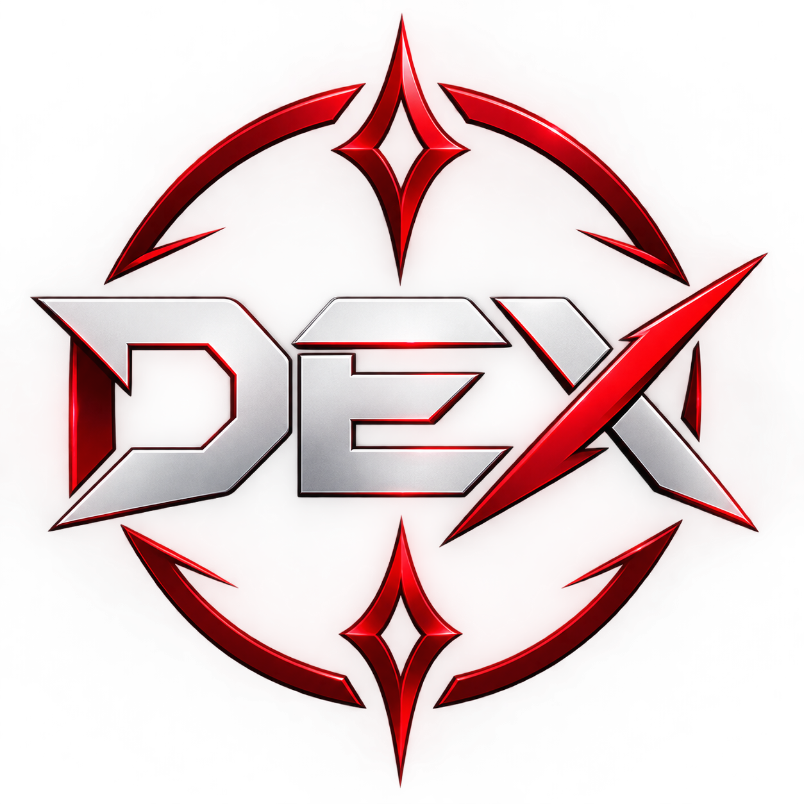

Cómo navegar
Usa el botón ← para regresar a la página anterior. Desde Inicio puedes acceder a cada sección de Dex.

Aprende a usar Dex y encuentra rápidamente lo que necesitas.
Usa el botón ← para regresar a la página anterior. Desde Inicio puedes acceder a cada sección de Dex.
En las secciones que tienen filtros puedes buscar por nombre y utilizar los filtros disponibles para encontrar información más rápido.
Usa el botón ☀️ o 🌙 para cambiar entre el tema claro y oscuro. Tu elección se guarda automáticamente y se mantiene al cambiar de página.
Dex está diseñado para utilizarse desde dispositivos móviles. Puedes tocar las tarjetas, botones, filtros y elementos interactivos directamente.
Entra en 🃏 Cartas desde Inicio. Ahí puedes buscar cartas y utilizar los filtros disponibles. También puedes tocar una carta para consultar su información.
En ⚡ Elementos encontrarás las fortalezas y debilidades de cada elemento.
En ✨ Habilidades puedes consultar las habilidades organizadas por rol.
En ⚔️ Raids puedes consultar las habilidades y características de los bosses.
En 👥 Team puedes seleccionar cartas, aplicar filtros y preparar los comandos necesarios para organizar tu equipo.
En 🔄 Evolve encontrarás los requisitos de evolución, Awakening y Overdrive, además de las herramientas de cálculo disponibles.
Sí. Dex guarda tu elección de tema en el navegador para mantenerla al cambiar entre las páginas.
Comprueba tu conexión a internet e intenta volver a cargar la página. Algunas imágenes dependen de servidores externos.
Comprueba que el nombre esté escrito correctamente y revisa los filtros activos. Prueba también limpiando los filtros.
Recarga la página e inténtalo nuevamente. Si el problema continúa, puede tratarse de un error de la página.
Comprueba que JavaScript esté habilitado y vuelve a cargar la página. La configuración del tema depende del almacenamiento del navegador.
Dex es una herramienta de consulta diseñada para explorar y organizar información sobre cartas, elementos, habilidades, Raids, equipos y evolución.
La información está separada por categorías para que puedas encontrar rápidamente lo que necesitas.